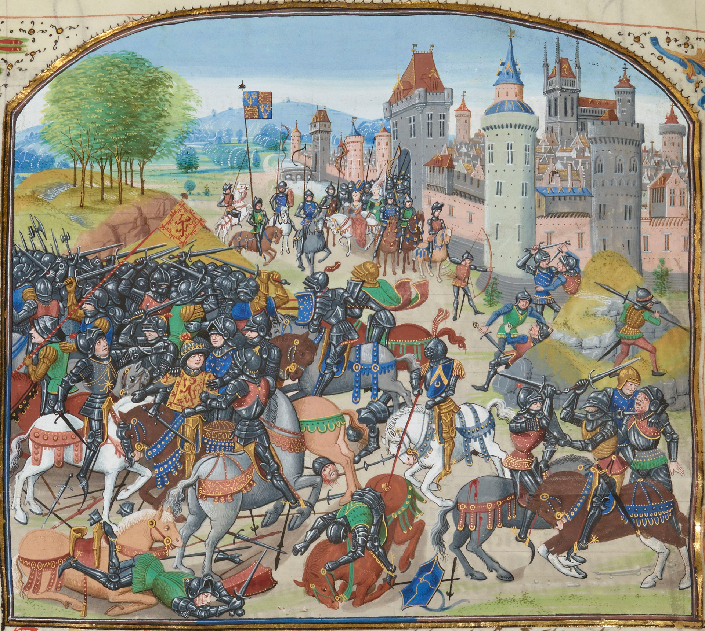
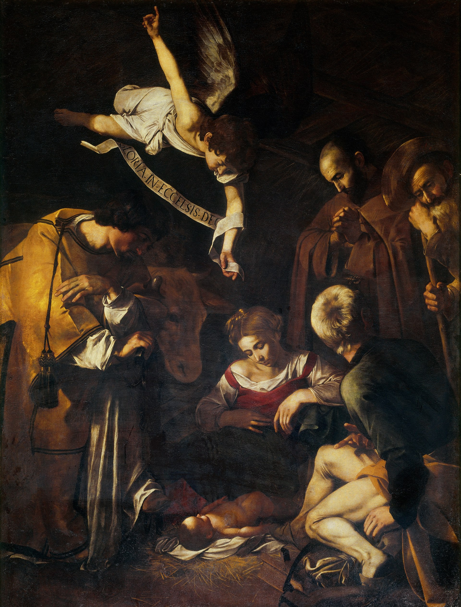

Welcome to Wikipedia,
the free encyclopedia that anyone can edit.
5,952,816 articles in English.
- Arts
- Biography
- Geography
- History
- Mathematics
- Science
- Society
- Technology
- All portals
From today's featured article
 The Battle of Neville's Cross, as depicted in a 15th-century manuscript The Battle of Neville's Cross took place on 17 October 1346 during the Second War of Scottish Independence, half a mile (800 m) to the west of Durham, England. During the Hundred Years' War, King Philip VI of France called on the Scots to fulfil their obligation under the terms of the Auld Alliance. King David II obliged and ravaged part of northern England. An English army of approximately 6,000–7,000 men led by Lord Ralph Neville took David by surprise on a hill marked by an Anglo-Saxon stone cross. David's army of 12,000 was defeated, he was captured, and most of his leadership was killed or captured. The English victory freed significant resources for their war against France, and the English border counties were able to guard against the remaining Scottish threat from their own resources. The eventual ransoming of the Scottish king resulted in a truce which brought peace to the border for forty years.(Full article...)
Recently featured: McKinley Birthplace Memorial gold dollarAl-Mu'tadidSenghenydd colliery disaster ArchiveBy emailMore featured articles
Did you know...

Hannah Simpson Grant
- ... that Hannah Simpson Grant (pictured), mother of U.S. president Ulysses S. Grant, did not attend her son's inauguration?
- ... that Litsy is similar to Twitter and Instagram, but is only for books?
- ... that property developer Edoardo Mapelli Mozzi, fiancé of Princess Beatrice of York, co-founded a charity in Rwanda that aims to use cricket to foster social change?
- ... that the cause of the decline in hornleaf riverweed, a foundation species in swift-flowing rivers in North America, is unclear?
- ... that pediatric oncologist Brigid Leventhal was one of only six women in her graduating class from Harvard Medical School in 1960?
- ... that Shaun Murphy pulled out of the 2019 Paul Hunter Classic snooker tournament after injuring his leg dancing to Disney's Greatest Hits?
- ... that the construction of New York City's Tweed Courthouse, prolonged over 20 years, has been called "a classic in the annals of American graft"?
- ... that tenor Thomas Mohr, who has sung the roles of Loge, Siegmund, and Siegfried in Der Ring in Minden, hosts concerts in his cowshed?
- Archive
- Start a new article
- Nominate an article
In the news

Esther Duflo
- The trial of Catalonia independence leaders concludes with nine jail sentences, sparking protests across the region.
- The Nobel Memorial Prize in Economic Sciences is awarded to Abhijit Banerjee, Esther Duflo (pictured), and Michael Kremer for their work in poverty reduction.
- Ten days of protests in Ecuador end after President Lenín Moreno agrees to repeal austerity measures and restore fuel subsidies.
- Kenyan Brigid Kosgei breaks the women's marathon world record at the Chicago Marathon.
Ongoing: Brexit . Hong Kong protests . Turkish Syria offensive
Recent deaths: Elijah Cummings . Leah Bracknell . SulliHevrin Khalaf . Ding Shisun . Sara Danius
Nominate an article
On this day

October 17: Dessalines Day in Haiti (1806)
Nativity with St. Francis and St. Lawrence
- 1604 – German astronomer Johannes Kepler began observations of an exceptionally bright object, now known as Kepler's Supernova, which had suddenly appeared in the constellation Ophiuchus earlier in the month.
- 1777 – American Revolutionary War: General John Burgoyne's Saratoga campaign ended with his surrender to the Americans, which later convinced France to enter the war in alliance with the United States.
- 1814 – A wooden beer fermenting vat in London burst, destroying a second vat and causing a flood of at least 128,000 imperial gallons (580,000 l; 154,000 US gal) of porter that killed eight people.
- 1969 – The Caravaggio painting Nativity with St. Francis and St. Lawrence (shown) was stolen from the Oratory of Saint Lawrence in Palermo, Italy.
Edward Hawke, 1st Baron Hawke (d. 1781) · Childe Hassam (b. 1859) · Chuka Umunna (b. 1978)
More anniversaries: October 16 · October 17 · October 18
Archive · By email ·List of historical anniversaries